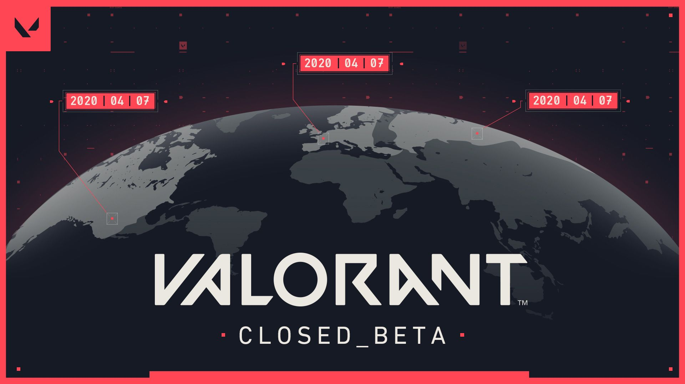
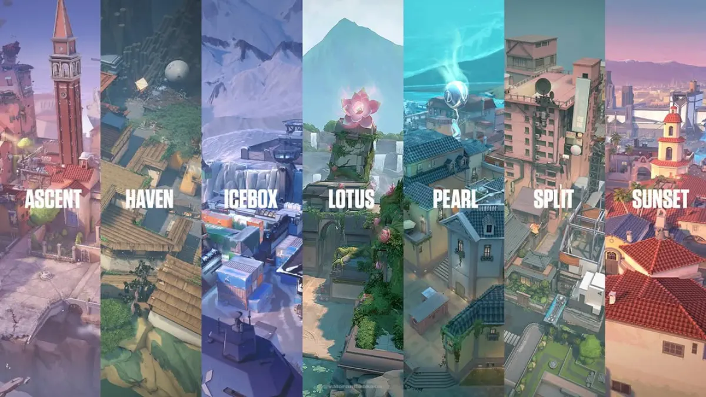

O nome secreto: Project A
Antes de ser VALORANT, o jogo foi anunciado em outubro de 2019 com o codinome "Project A", durante os eventos de aniversário de 10 anos da Riot Games.
Da ideia secreta da Riot Games até os campeonatos mundiais: conheça a trajetória do shooter tático 5x5 que conquistou milhões de jogadores.
Explorar curiosidadesVALORANT é um jogo de tiro tático em primeira pessoa, gratuito, desenvolvido e publicado pela Riot Games. Duas equipes de cinco jogadores se enfrentam: uma ataca e tenta plantar a Spike, a outra defende os locais de bomba. Cada jogador escolhe um agente com habilidades únicas, misturando mira precisa com estratégia.
Antes de ser VALORANT, o jogo foi anunciado em outubro de 2019 com o codinome "Project A", durante os eventos de aniversário de 10 anos da Riot Games.

O beta fechado começou em abril de 2020 e ficou famoso pelos drops da Twitch. O lançamento oficial aconteceu em 2 de junho de 2020.

Cada agente possui habilidades próprias e uma ultimate. Os agentes são divididos em funções como Duelista, Iniciador, Controlador e Sentinela.

No lançamento, o jogo tinha os mapas Bind, Haven, Split e Ascent. Hoje o conjunto de mapas muda com o tempo, mantendo o jogo sempre renovado.

O jogo se passa em uma versão alternativa da Terra, onde um evento chamado Primeira Luz deu origem ao Radianite, material que alimenta as habilidades dos agentes.

O circuito oficial, o VCT, leva as melhores equipes ao Champions, o mundial do jogo. O primeiro foi disputado em 2021, em Berlim, e vencido pela Acend.